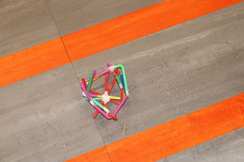
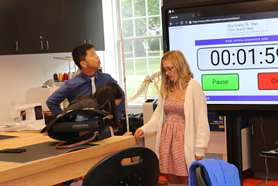
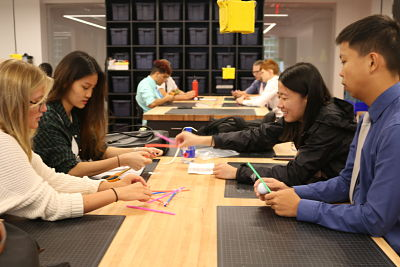

We had 12 straws to make a golf ball catcher. Then we used three pages of newspaper to make a tower, and we tried to make it as high as possible. We had a good design of the newspaper tower, but we were not able to have it stand on the ground. For the straw challenge, we were able to use our device to decrease the momentum of the golf ball but we are not able trap it into the device.   